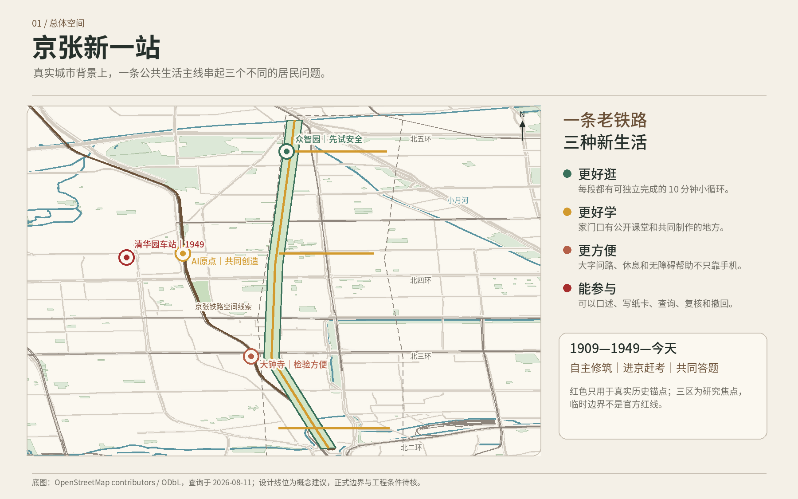
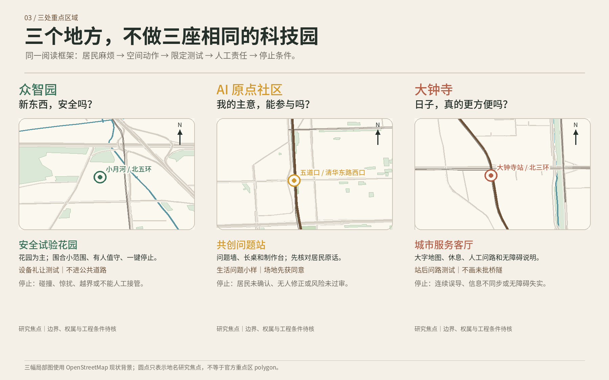
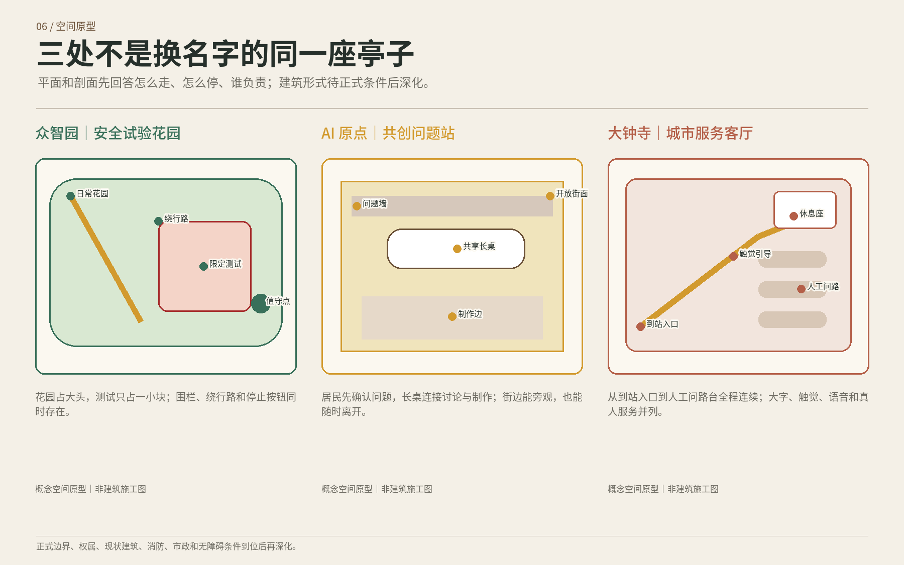
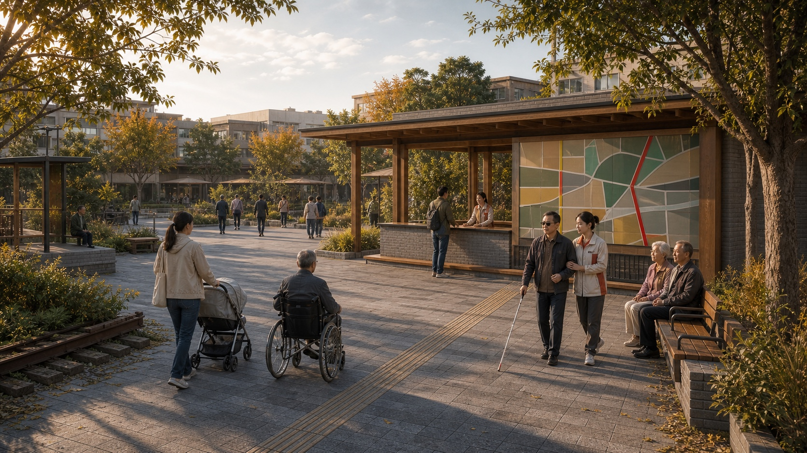
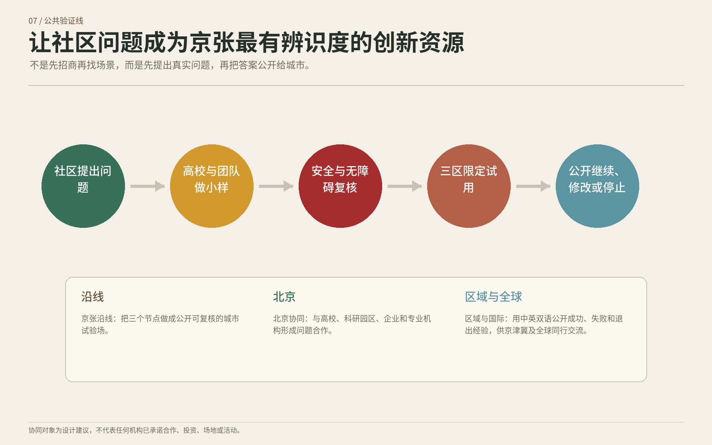
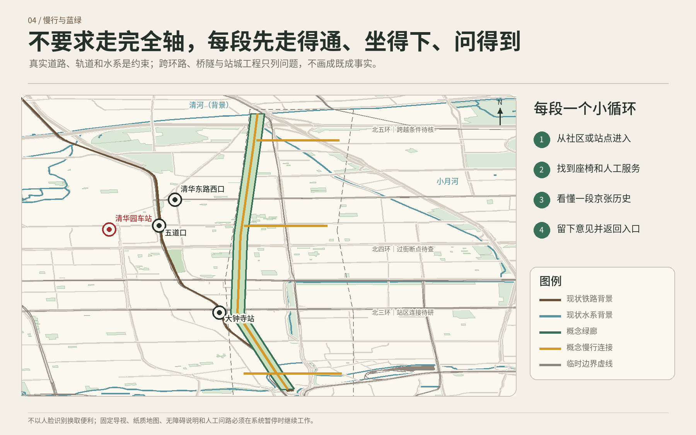
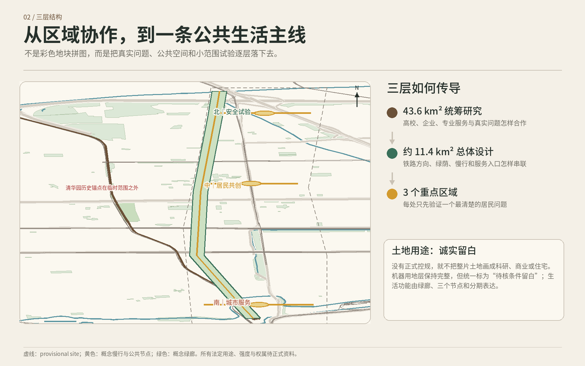
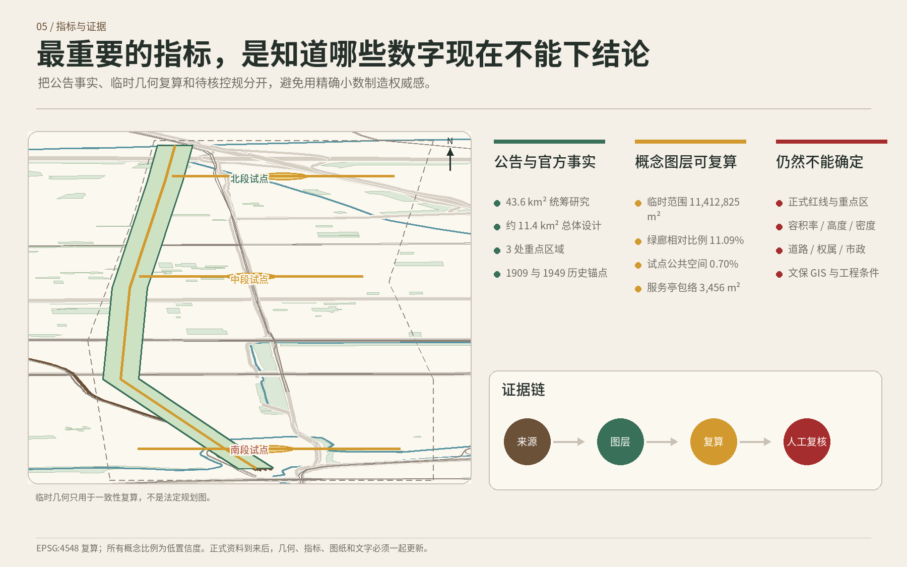

01 / 判断
先把沿线变成好用的地方，创新才有意义
方案用三层范围处理不同问题：大范围看京张如何协同，中范围把慢行、公园和社区服务串起来，小范围先从三个居民问题做起。
统筹研究范围
约 43.6 平方公里，思考高校、园区、社区和历史文化怎样共同生长。
回答：这条带为什么是京张，而不是任何城市都能复制。总体设计范围
约 11.4 平方公里，用铁路、公园、道路和公共服务组织一条能走、能停、能连接的生活主线。
回答：普通人怎样真正用上这条带。三个重点片区
众智园、AI 原点社区、大钟寺各自先解决一个不同的生活问题。
回答：从哪里开始，怎样小步试、随时改。
边界说明：本方案尚未取得组织方正式范围，图中是研究用临时范围，不是官方红线，也不用于审批、权属或工程放线。正式数据到位后统一复算。
02 / 记忆
不是把历史做成布景，而是把“自主、赶考、共同答题”连起来
清华园车站旧址是独立的红色历史锚点。它不被塞进三个当代创新节点，也不把今天设计的步行线说成历史真实路线。
1909
自主修筑
从京张铁路自主修筑的历史出发，记住解决真实问题的勇气和方法。
1949
进京赶考
在清华园车站旧址及经核实的导览中，用记忆红准确讲述抵达北平的重要历史。
今天
共同答题
把“新技术是否安全、知识能否共享、生活是否方便”交给居民、团队和专业人员共同回答。
红色记忆的底线：只使用可追溯史料；党史、铁路史、文博和属地专业人员审核后再公开。文保范围未取得正式图层前，不手画保护线，不设置未经核准的永久装置。
03 / 三区
三段路，不做三个一样的“科技园”
每个片区先问一句普通人会问的话，再决定空间和服务。三个节点首先是能坐、能问、能不用手机的公共空间。

北—中—南三个片区使用同一阅读框架，解决不同居民问题。来源：投稿包中的空间图与登记资料

众智园｜安全试验花园
“新东西，安全吗？”
把测试放在边界清楚、有人值守的小花园里；先礼让孩子、老人和轮椅，再谈进入日常。
- 可移动座椅与遮荫
- 清楚围栏和一键停止
- 不占公共道路测试
AI 原点｜共创问题站
“我的主意，能参与吗？”
居民说原话，学生和团队做小样，专业人员查安全与法规；意见不被漂亮提案盖过去。
- 问题墙、长桌和纸板制作
- 人工服务窗与字幕协助
- 不擅自使用校园或私人空间
大钟寺｜城市服务客厅
“日子，真的更方便了吗？”
先做好出站问路、休息、无障碍说明和成熟服务展示，不用一座昂贵地标证明创新。
- 大字地图和休息座
- 人工问路与临时展台
- 不承诺未批准的桥隧工程



图像边界：以上三图均为设计想象图，只表达居民体验，不代表现状、正式边界、获批建筑或工程实施结果。
04 / 验证
把社区问题变成京张最有辨识度的创新资源
不是先招商再找场景，而是先提出真实问题，再让团队做小样、专业人员复核，最后把继续、修改或停止都公开。

三个公开试验场
不仅展示成功，也公开失败、修改和停止。
让居民能够回来查到答案。形成问题合作
建议连接高校、科学城、企业和独立专业人员。
不冒充已有合作、投资或场地。区域与全球交流
每年用中英双语公开经验，与京津冀和国际同行讨论。
交流方法，不复制地标。05 / 空间
一条公共生活主线：慢慢走，也能随时停
真实铁路、道路、水系与公园关系是底图；新增内容以可撤、可调的小设施和慢行建议为主。看不到官方依据的地方，宁可留白，不编一张“看起来完整”的规划图。


沿线先做四件小事
- 1看得见方向
北中南分段和十分钟小循环，大字写清步行时间。 - 2走累了能坐
休息、遮荫、卫生间和人工服务优先于互动屏。 - 3历史讲准确
清华园车站独立标识，不把当代设计冒充历史。 - 4问题有人接
三个片区各设一个看得见、有人值守的问题服务点。
建筑与更新怎么做
新增的三个小型服务亭总占地建议约 3,456 平方米，均为可逆、可调整的概念组件，不代表已经获批建筑。
- 留保留有价值的铁路、公园、社区生活与现状建筑线索。
- 改优先利用开放首层、空闲场地和临时设施，减少一次性建设。
- 补只补遮荫、座椅、无障碍、人工服务和必要的安全设施。
- 停没有合法场地、维护人或真实使用，就到期撤下。
06 / 日常
AI 不必站在舞台中央，十件小事先让生活好一点
征集主题要求回应 AI 创新带，但技术只是工具：帮助整理、翻译、查重和提示风险。建设、治理、权益和处罚都由人负责。任何服务在没有 AI 时也能继续。
三项产业测试，全部从小范围开始
众智园测试设备礼让；AI 原点把居民问题做成小样；大钟寺测试到站后的问路服务。测试不等于批准，出现危险、隐私问题或无法人工接管，立即停止。
今天走哪条路更轻松
把核实后的无障碍、座椅和公共交通信息变成大字、语音或简明路线。
不用 AI：固定地图、纸质路线卡、人工问路。设备先学会礼让
只在众智园围合小范围内测试减速、停车和让行，现场人员可一键停止。
不用 AI：花园仍是普通休息空间。公园问题说出来、写下来
口述、纸卡和线上意见都能登记；人工核对原话，给出可查询编号。
不用 AI：人工登记本继续使用。家门口的技术防骗课
把公开材料做成适合老人、儿童和普通居民的问答练习，专业人员审核。
不用 AI：教师讲解和印刷手册。每个人都能参加的邻里议事
字幕、翻译和议题整理帮助不同语言和听视障碍者表达，并保留原话核对。
不用 AI：人工翻译、手写板和纸质议程。把生活问题做成小样
居民确认问题，团队做低成本小样，专业人员检查安全、无障碍和法规。
不用 AI：面对面工作坊和纸板模型。公益好点子找到帮手
公开条件做初步匹配，场地方、导师和组织单位自己审核并决定。
不用 AI：公开目录、电话和开放日配对。到站后少绕一点路
大钟寺把经核对的路线做成大字、语音和多语言问路，不画未批桥隧。
不用 AI：固定导视、纸质地图和人工问路。参加活动时有人帮一把
简明说明、字幕和语音只是辅助；秩序、内容和无障碍帮助由主办方负责。
不用 AI：主持人、印刷说明和志愿者。把京张和进京赶考讲准确
只依据登记并经人工审核的史料生成讲解草稿，不娱乐化，不混写路线。
不用 AI：固定展签、纸质导览和人工讲解。07 / 运行
不是办完活动就散场，要让每个问题有回音
居民提出问题后，先核对原话，再小范围试用；有人决定继续，也有人负责停止。建议的处理时限必须等责任单位正式确认后才能对外承诺。
1 提问题口述、纸卡或线上都可以。
2 对原话现场人员确认没有理解错。
3 做小样团队提出低成本、可退出的办法。
4 小范围试限定地点、时间和负责人。
5 一起评价居民和专业人员都能说“不行”。
6 决定去留有权主体决定继续、修改或停止。
居民开放日
公开收到的问题、已处理事项和仍找不到责任主体的事项。失败和无进展也要说清。
继续还是停
逐项看安全、投诉、隐私、无障碍、真实使用和维护。只有继续、修改、暂停、停止四种结论。
人人看懂的城市答卷
公开解决了什么、谁受益、哪里失败、成本属于哪类、下一年准备改什么。
08 / 证据
哪些是事实，哪些只是建议，在图上就说清楚
自动检查只是格式底线。作品更重要的标准是：居民能不能看懂，空间关系对不对，关键判断能不能回到来源，未知条件有没有被诚实标出。

总体设计范围约 11.41 km²临时边界复算
绿地比例约 11.09%设计几何复算
公共空间比例约 0.70%仅计新增建议图层
可逆服务亭占地3,456 m²概念建议
容积率未知缺正式控规与现状建筑数据
现在可以说明
- 京张铁路、公园、水系、道路与站点的公开背景关系
- 三个研究焦点与四段慢行建议的设计逻辑
- 场景、责任、隐私、人工兜底与停止条件
- 当前临时几何可以重复计算的面积和比例
还不能冒充已确定
- 正式项目红线、重点区边界与文保控制线
- 法定用地、容积率、建筑高度和工程量
- 权属、市政容量、交通工程和真实建设时序
- 运营单位、承诺时限、预算金额和审批结论
主要公开来源
- 北京市相关部门发布的京张铁路、清华园车站红色历史、京张铁路遗址公园与文保资料
- 组织方公告、场地资料包和任务书
- OpenStreetMap 公开道路、铁路、水系、公园与站点数据，依据 ODbL 使用并署名贡献者
- 剑桥 Kendall Square、MaRS、STATION F、Barcelona 22@、JTC LaunchPad、Seoul DMC 六个官方案例来源
打开方式与版权
这是离线页面，只读取投稿包内的本地图像，不连接远程地图、字体、脚本、接口或追踪服务。
四张居民场景图由生成式图像工具辅助制作，经过人工选择、修改、标注和风险判断；地图、信息图、文字和排版由参赛团队制作。具体边界见版权说明。
版本：2026-08-14 · 设计研究稿 · 非审批文件
成果阅读索引
这些名称对应征集检查栏目。普通读者不必逐项核对，点回上方各节即可看到完整内容。
总览地图整条京张带在哪里
重点区域三个片区分别做什么
用地分区缺控规处为什么诚实留白
交通慢行怎么走得更顺、更安全
蓝绿公共空间公园、水系与休息点怎样连接
更新项目哪些先留、先改、再补
AI 场景技术只在哪些小事里帮忙
核心指标哪些数字能算，哪些还未知
任务覆盖征集要求是否逐项回答
自检状态哪些检查已做，哪些仍待完成
假设缺什么正式资料、会影响什么